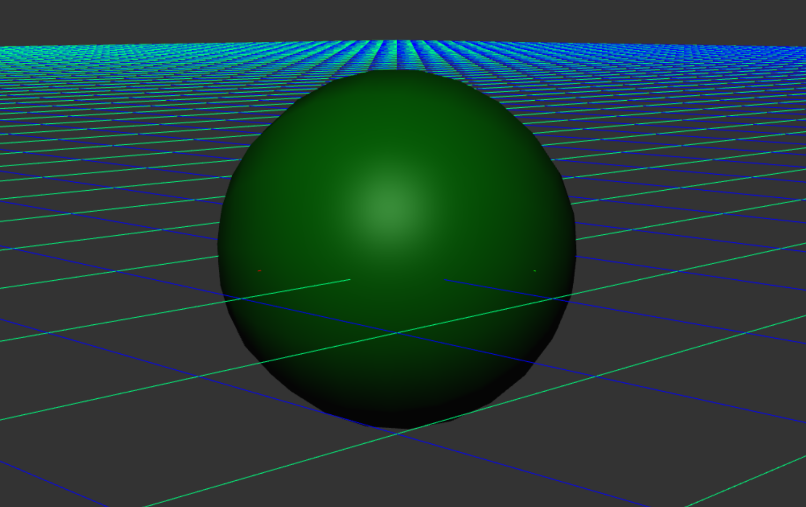
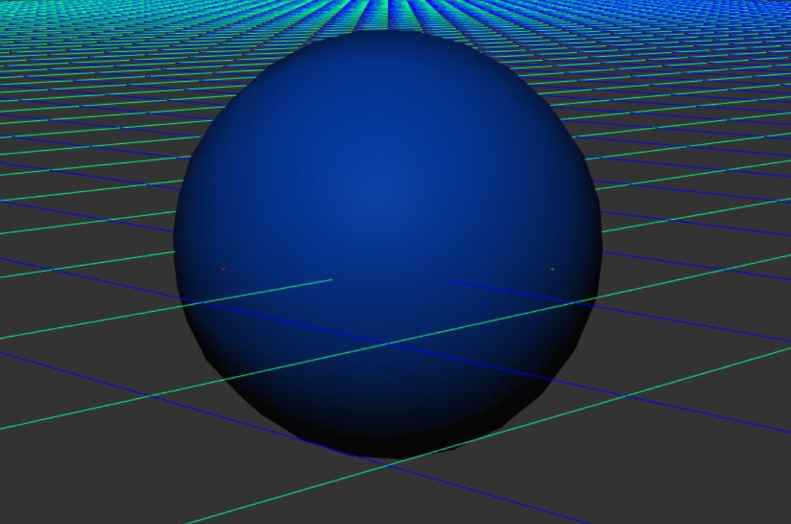

This project is about 4 different 3D shading methods, namely Gouraud Shading, Phone Shading and two light sources Phone Light, Blinn-Phone Light.

This red ball shows the effect of Phone Shading and Phone Light on a red plastic material.
Use the interface options to switch between different rendering methods at will and to adjust the camera view.

By changing the RGB values of different light sources, we can make different rendering effects happen to the object. The following figure shows a sphere made of green plastic as an example.

The highlights on the sphere are a kind of specular reflection light, we can control this part of the light source alone so that the sphere only receives the influence of Diffusion light.